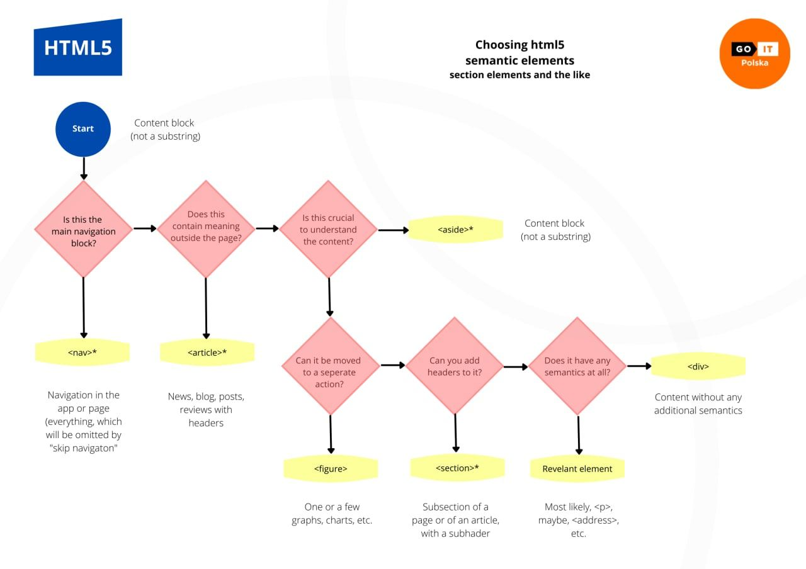

Структурная разметка
Есть целый набор семантических тегов для разметки больших логических разделов и улучшения структурной семантики страницы. Каждый из них может быть использован при определённых условиях. Это влияет на работу ассистивных технологий, индексирование страницы и её рейтинг выдачи в поиске.
Потоковое содержимое
Тег <header>
Шапка (хедер) выделяет вводную часть всей страницы, сложной секции или статьи. Обычно содержит логотип, навигацию, вводный текст, сложный заголовок. Может быть несколько на странице.
<body>
<!-- Шапка страницы -->
<header>
<a href="/">Логотип сайта</a>
<ul>
Меню навигации по другим страницам
</ul>
</header>
</body>
Тег <footer>
Подвал (футер) это финальная часть всей страницы, её раздела или статьи. Часто содержит копирайт, список ссылок на социальные сети, контактную информацию и так далее. Может быть несколько на странице.
<body>
<!-- Шапка страницы -->
<header>
<a href="/">Логотип сайта</a>
<ul>
Меню навигации по другим страницам
</ul>
</header>
<!-- Подвал страницы -->
<footer>
<!-- Копирайт -->
<p>Все права защищены ©lpj.dev</p>
<!-- Ссылки на соцсети -->
<ul>
<li><a href="">Facebook</a></li>
<li><a href="">Twitter</a></li>
<li><a href="">Instagram</a></li>
</ul>
</footer>
</body>
Тег <main>
Основное, не повторяющееся на других страницах сайта (уникальное), содержание. Может быть только один на странице.
<body>
<!-- Шапка страницы -->
<header></header>
<!-- Уникальный контент страницы -->
<main></main>
<!-- Подвал страницы -->
<footer></footer>
</body>
Смысловые разделы
Тег <nav>
Определяет раздел основной навигации со ссылками на секции текущей или других страниц. Используется только для основной навигации, а не для любой группы ссылок в документе.
<body>
<!-- Шапка страницы -->
<header>
<a href="/">Логотип сайта</a>
<nav>
<!-- Навигация на другие страницы -->
<ul>
<li><a href="/portfolio">Portfolio</a></li>
<li><a href="/contact">Contact</a></li>
<li><a href="/about">About</a></li>
</ul>
</nav>
</header>
<!-- Уникальный контент страницы -->
<main></main>
<!-- Подвал страницы -->
<footer>
<!-- ⚠️ Ссылки на соцсети, не nav -->
<ul>
<li><a href="">Facebook</a></li>
<li><a href="">Twitter</a></li>
<li><a href="">Instagram</a></li>
</ul>
</footer>
</body>
Тег <article>
Независимая, отделяемая и, имеющая значение вне, часть документа. Например пост на форуме, твит, статья в блоге, виджет с рекламой, инстаграм история, карточка товара в магазине.
<article>
<h1>Сладкий пирожок</h1>
<img src="ссылка на изображение пирожка" alt="пирожок" />
<p>
Очень вкусный печёный пирожок с различными наполнителями: вишней, персиком
сливой или клубникой.
</p>
<p>Цена: 50 кредитов</p>
</article>
Если разделу документа можно дать имя, вынести его вне сайта и он будет иметь
смысл - это <article>. Обязателен заголовок.
Тег section
Крупный раздел, объединяющий содержание по смыслу. Неотделим от основного документа. Например секция списка товаров, блок личной информации в профиле пользователя, раздел контактной информации.
<section>
<h1>Самые популярные пирожки этой недели</h1>
<!-- Внутри каждого <li> может быть карточка пирожка из секции «Тег <article>» -->
<ul>
<li>Жареный с грибами</li>
<li>Жареный с мяссом</li>
<li>Печёный с яблоками</li>
<li>Печёный с творогом</li>
</ul>
</section>
Если разделу документа можно дать имя, но вне сайта он не будет иметь смысла -
это <section>. Желателен заголовок.
Тег <div>
Универсальный контейнер без семантического значения. Используется как блок-обёртка для последующей стилизации контента.
Если не получается дать группе контента вменяемое имя (не "правая колонка", а
имеющее смысл) - это <div> и скорее всего вам просто нужен общий контейнер для
оформления.
Алгоритм выбора тега
Не только новичкам бывает трудно решить какой тег использовать для разметки блока контента основываясь на его семантическом значении. Пользуйтесь этим алгоритмом для определения подходящего тега.
Разметка страницы
Используя все рассмотренные теги наберём разметку простой страницы начинающей веб-студии.
В примере не хватает разметки скелета документа, потому что его автоматически добавляет сама интерактивная площадка codepen.io. Для полноты картины запишем базовую разметку документа.
<!DOCTYPE html>
<html lang="ru">
<head>
<meta charset="UTF-8" />
<title>Веб студия mango.dev</title>
</head>
<body>
<!-- Вся разметка из живого примера -->
</body>
</html>